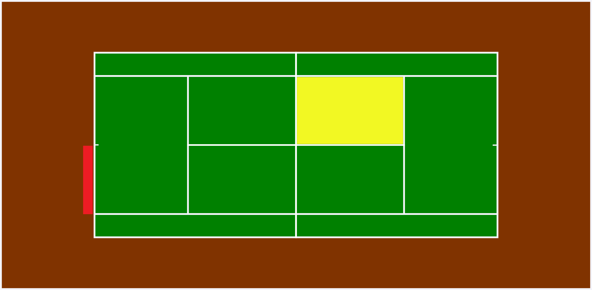
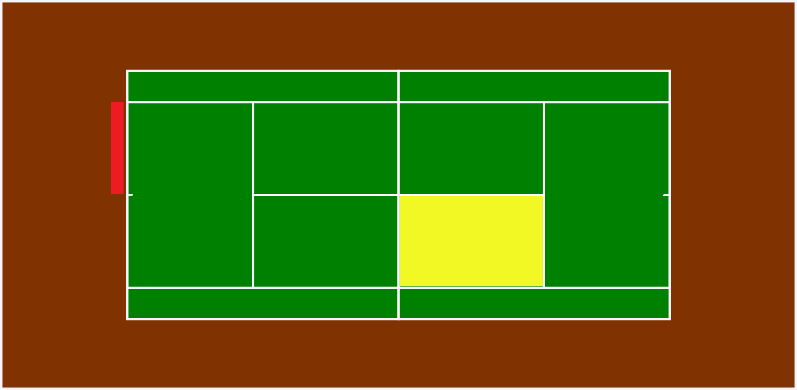

Bodovanje
- 1 poen = 15
- 2 poena = 30
- 3 poena = 40
- 4 poena = osvajanje igre
Da bi igrač osvojio igru treba osvojiti dva više poena od protivnika. U slučaju da je rezultat izjednačen 40-40(Deuce), onda igrač mora osvojiti 2 poena zaredom (Advantage poen i poen). Kad igrač, koji ima AD, izgubi poen rezultat se vraća na Deuce.
S osvojenih 6 igara igrač dobiva set. I u ovom slučaju igrač mora osvojiti dvije igre više. Ako je rezultat u setovima 5-5, set se produljuje do 7. Ako je opet izjednačeno (6-6) onda se igra tiebreak. U tiebreaku prijašnje bodovanje (15,30,40) više ne vrijedi, onaj igrač koji prvi osvoji 7 poena s dva poena razlike osvaja igru, time i set.
Servis
Prije početka meča bacanjem novčića se određuje koji će igraač prvi servirati. Igrači se izmjenju sa servisom svakom drugom igrom.
Igrač servira sa bilo kojeg mjesta označenog crvenom bojom. Serviranjem mora pogoditi područje označeno žutom bojom. U slučaju promašaja servisa, igrač ima još jedan pokušaj. Ukoliko promaši i drugi servis, to se naziva dvostruka pogreška i igrač gubi poen.
 Pobjednik
Igrač koji prvi osvoji dva seta je pobjednik. Na Grad Slam i Davis Cup turnirima igrač mora osvojiti tri seta.